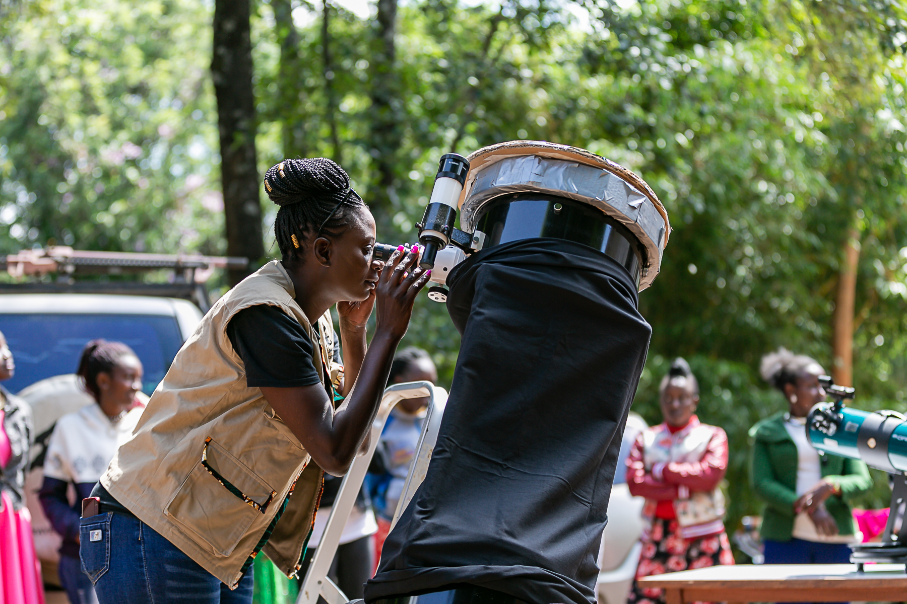
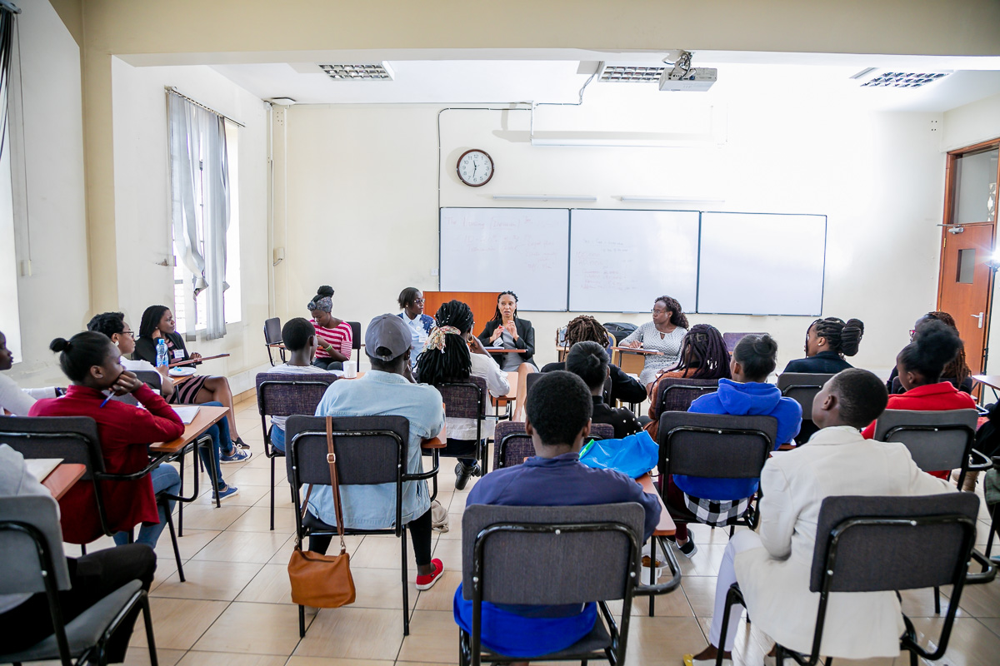
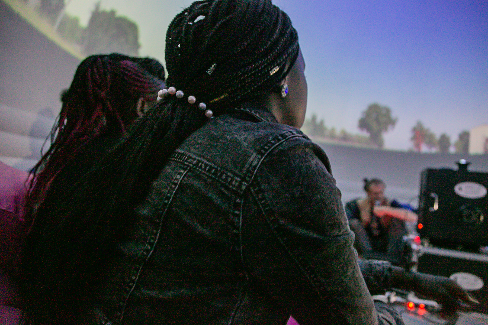

Regional Highlights from Mawazo's COVID-19 Survey Findings
February 24th, 2022

To help stakeholders understand the impact of the COVID-19 pandemic on Africa’s research and higher education sector, the Mawazo Institute surveyed students, educators, and researchers based on the continent between August 11th, 2021 and October 15th, 2021. In this interactive story map, you can compare and contrast how respondents based in different regions of Africa answered a curated selection of survey questions To see the results for all our survey questions, with all the survey data collected on differences between genders, age groups, and other demographics: In order to create the maps displayed below, we adopted the regional boundaries used by the African Union during our analysis.

We found that 90.1% of respondents had experienced COVID-19 related disruptions to their classes - for example school closures, reduced class sizes, the suspension or cancellation of classroom learning, or shifts to e-learning. However, the scale of these effects varied across regions, with notable differences between East Africa and West Africa and Southern Africa.
Click on any region to see a popup window with additional data. Use the + and – buttons in the bottom right corner to zoom in and out on the map. ...
The map shows respondents whose institutions were affected by COVID-19. A dark colour indicates that a larger percentage of respondents in the region were affected, while a light colour indicates a smaller percentage of respondents were affected. North Africa had the highest percentage of respondents whose classes had been affected by COVID-19 (93.3%) while Central Africa had the lowest (83.3%)
Only 57.9% of respondents in West Africa were at institutions offering e-learning options compared to 100% of respondents in Central Africa.

Overall, 88% of respondents were conducting research at the time of the survey. Of these, 50.4% were involved in lab research and 72.5% in field research, while 72.2% reported that they had been forced to suspend their field or lab activities due to pandemic restrictions.
Click on any region to see a popup window with additional data. Use the + and – buttons in the bottom right corner to zoom in and out on the map.
Central Africa had the highest percentage of respondents conducting research at the time of the survey (100%) while East Africa had the lowest (83.6%)
East Africa had the highest percentage of respondents able to continue working from home during the COVID-19 pandemic (87.7%) while North Africa had the lowest (53.3%).
North Africa had the highest percentage of respondents (85.7%) who had to suspend their lab or field activities while Central Africa has the lowest percentage of respondents (28.6%).
On this map, weighted averages were calculated from responses submitted on the following scale: Significantly decreased (numerically coded as 1), Slightly decreased (2), No effect (3), Slightly increased (4), Significantly increased (5). Respondents in the region with the darkest colour experienced the least severe loss of career opportunities, while those in the region with the lightest colour experienced the most severe loss. Respondents in West Africa reported the least severe reduction in their ability to access promotions and career opportunities (with weighted average of 2.54) while those in North Africa reported the most severe reduction (with weighted average of 2.00).
Visit the Mawazo Institute website to explore more about our work:
mawazoinstitute.orgVisit the Mawazo Institute website to explore more about our work: